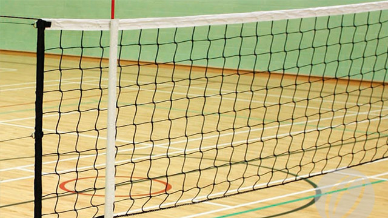

The PAFFREL is body whose first objective is ‘To mobilize people led uninterrupted election observation to ensure flawless electoral processes from local government to provincial council and parliament to presidential elections’. The PAFFREL had filed a petition against the continuous postponing and delaying of the local government election which were to be held in the years 2015 and 2016, a three judge panel fixed it for argument on the 3rd of March. What does the PAFFREL stand for
View Answer
People’s Action For Free And Fair Elections
Next
The Parliament of Sri Lanka is the 225-member unicameral legislature of Sri Lanka. The members of Parliament are elected by proportional representation for five-year terms. Parliament reserves the power to make all laws. It is modeled after the British Parliament. Who was the foreign prime minister who addressed the Sri Lankan parliament in March 2015?
View Answer
Previous
Next
It has been a part of the official program of the Summer Olympic Games since 1964. Foot foul, Double Hit, Spiking and Blocking are terms associated with this sport. It is usually a team sport, what is this sport

View Answer
Previous
Finish